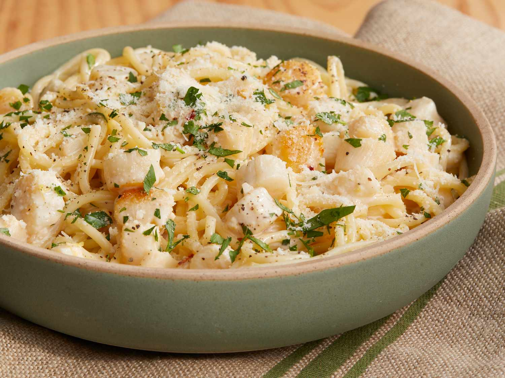

Creamy Scallop Spaghetti

A fast and quick recipe, but most importantly, tastes amazing!
Within 30 minutes, you can make four delicious servings of spaghetti for your family and friends!
Ingredients
- 8 ounces uncooked thick spaghetti
- 1 tablespoon vegetable oil
- 1 pound bay scallops
- 2 tablespoons butter
- 3 cloves garlic, minced
- 2 teaspoons grated lemon zest
- 1 pinch red pepper flakes
- 1/3 cup dry sherry
- 1 cup heavy cream
- salt and pepper to taste
- 1 lemon, juiced
- 2 tablespoons chopped Italian parsley, divided
- Freshly grated Parmigiano-Reggiano cheese, for serving
Steps
- Bring a pot of salt water to boil
- Place spaghetti in boiling water, let cook for about 10 min or 1 min less than directed on package (until tender yet firm)
- Heat oil in a pan, and let scallops sear for around 1 min each side
- add butter and stir until it melts. stir in garlic
- add lemon zest and ref pepper flakes
- stir in sherry and stir until alcohol cooks off (around 1 min)
- Pour in cream. When mixture begins to simmer, reduce heat to medium-low
- Add salt, pepper, and lemon juice
- Drain pasta and transfer to skillet with scallops. bring to a simmer
- Add 1/2 of the chopped parsley. Cook until pasta is heated through and tender (about 1 minute)
- Remove from heat. Garnish generously with grated cheese and add the rest of the parsley
Now your ready to dig in and enjoy a nice hot serving of creamy scallop spaghetti!
Back to Top
Back to Homepage